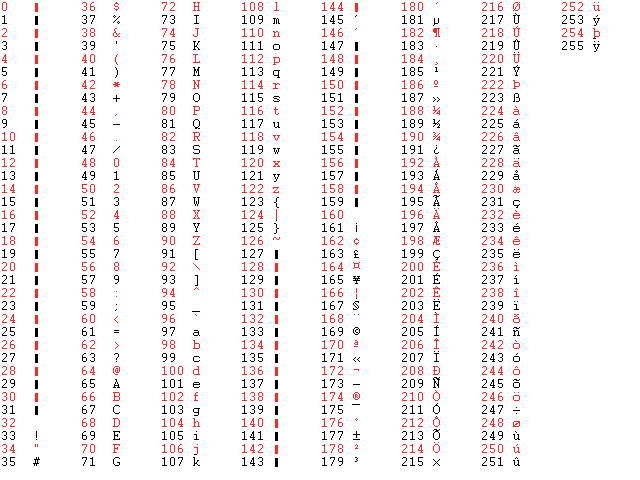

Jokaiselle tietokoneen merkistön merkille on annettu numero. Tätä tunnistetta kutsutaan ascii-koodiksi. ASCII-merkistö ei sisällä vastineita kaikille näppäimille, mutta merkkejä ja symboleita siihen voi soveltaa parhaiten.
Tämä taulukko on lähinnä lisämateriaaliksi GetKey(), Asc(), WaitKey() ja Chr()-funktioille. Peliohjelmoinnissa kannattaa kuitenkin käyttää KeyDown() ja KeyHit() -funktioita, jotka käyttävät SCANCODE-taulukkoa.
<<TAKAISIN